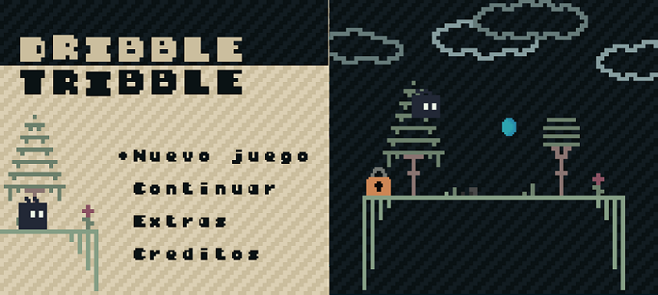

"DRIBBLE TRIBBLE: Un nuevo juego para Game Boy Color"
Hoy en día el auge por revivir lo retro está en el alza. Y eso es bueno, porque las personas que somos acérrimas a jugar videojuegos antiguos, nos da felicidad poder disfrutar de nuevos títulos. Hace un tiempo, leí un artículo sobre el desarrollo de un videojuego para la clásica Game Boy. El juego se llama 'Sheep It Up!' y su jugabilidad es bastante simple pero encantadora. Si quieren leer el artículo a continuación les dejo el enlace: Sheep It Up!
Como desarrollador junior, me gusta poder realizar proyectos de todo tipo, y la creación de un videojuego es algo que me apasiona mucho. En la actualidad crear un videojuego ya no es tan caótico como antes. Por ejemplo, tenemos distintos motores para la creación de un videojuego, ya sea Game Maker Studio, Godot, Unity, entre otros. Pero dentro de todo este mundo, encontré una herramienta totalmente grandiosa para crear juegos de Game Boy: GB Studio. Cuando terminé de leer el artículo me decidí a desarrollar mi propio videojuego retro, y aprovechando el motor de GB Studio, me puse manos a la obra.
DRIBBLE TRIBBLE es un videojuego de puzles combinado con plataformas.
DRIBBLE TRIBBLE es el proyecto en el cual estoy trabajando actualmente. El videojuego es una mezcla de géneros entre puzles y plataformas donde tienes que recolectar objetos para poder avanzar de nivel. Este videojuego está siendo desarrollado como mencioné antes en el motor GB Studio por la interfaz amigable e intuitiva que tiene. A continuación les dejaré información respecto al videojuego:
Adentrate en lo más profundo de 'Paper World' y ayuda a nuestro protagonista CUBY a resolver los más de 25 puzles en este nuevo juego de Game Boy Color.
Utiliza los símbolos de SOL y LUNA para que el mundo se convierta de día o de noche.
Obten las monedas de cada nivel para acceder a la llave que abre el candado y así avanzar en los niveles de 'Paper World'.
Dribble Tribble estará disponible en Diciembre de este año.
Próximamente lanzaré una DEMO con 5 niveles totalmente jugables, para que puedan disfrutar aunque sea de unos minutos de un videojuego hecho con amor a lo retro.